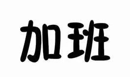
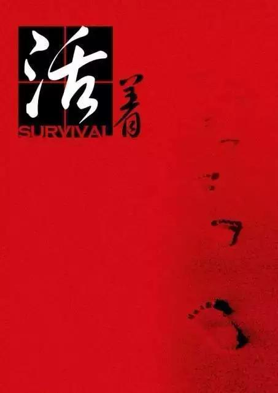

1
バグと蚊の共通点：
1、どこに隠れているか分からない。
2、何匹いるか分からない。
3、いつもあなたが寝ようとする時に現れる。
2
A：最近『ワンパンマン』を見ているんだけど、俺たちプログラマーはサイタマ先生とちょっと似てると思わない？
B：どこが似てるの？
A：禿げれば禿げるほど強くなる！
B：……

3
国慶節の前、とても可愛い女性同僚が突然「今日空いてる？」と聞いてきた。
その時ちょっと固まって、「ついに俺の良さが分かる女性が現れたか」と思い、笑顔で「空いてるよ！」と答えた。
それで……彼女とシフトを交代したんだ……
4
PMもPM2.5もプログラマーの健康に害を及ぼす。
ただ一つは会社の中、もう一つは会社の外というだけだ。
5
あるプログラマーが面接に行き、面接官が聞いた：「卒業してまだ2年なのに、この3年の実務経験はどこから来たんだ？！」プログラマーは答えた：「残業です。」

6
プログラマー必読の書籍：
第一段階：
- 『C言語プログラミングと設計』
- 『C++上級宝典』
- 『Swift入門と実践』
第二段階：
- 『怒らない方法を教えます』
- 『老子』
- 『沈黙の怒り』
第三段階：
- 『頸椎症リハビリガイド』
- 『腰椎椎間板ヘルニアの日常ケア』
- 『強迫性障害の自己回復』
第四段階：
- 『生きる』

7
数人のプログラマーが食事に行き、誰かが「麻辣牛蛙」という料理を注文した。するとその中の一人が牛蛙は食べないと言ったので、注文担当者が直接、麻辣牛蛙の前に斜線を2本引いた。こんな感じに：
// マーラー牛蛙
その場にいた誰も何かおかしいとは思わなかった。
8
子供の頃は、「早寝早起き体に良い」なんてただのスローガンだと思っていた。
でも、晴れてプログラマーになってから、初めてこりゃまったく実現不可能な三つの願いだと気づいたんだ！
9
社長：小程、退社するまでに新バージョンを必ずリリースしろ！
小程：はい。
翌日、社長が出社して小程に聞いた：新バージョンはどうしてまだリリースされてないんだ？
小程：まだ退社してないんですけど。
10
二人のプログラマーがいた。一人は技術が素晴らしく、思考が緻密で、真面目で責任感が強く、バグは極めて少ないが、今だに独身。もう一人は技術が普通で、だらしなく、バグだらけで、よくテスターのお姉さんの隣に呼ばれて叱られていた。その後、彼女の彼氏になった……
11
私のプログラマー友達が言っていたんだけど、彼はたった1週間デートしただけの女の子に4000ユーロのバッグを買ってやって、すぐに別れたんだ。私が「なぜ？ なぜなんだよ！」と聞くと、彼が言うには、その女の子が「バッグを買ってくれないなら、私のことを愛していないってこと」というロジックを設定したからだって。彼はそのロジックは本当に「fu*king ridiculous」だと思ったけど、しかし打ち破るのはとても難しいと思った。そこで彼は論理的に彼女に勝つために、バッグを買って彼女を振ったんだ。「俺はバッグを贈っても、お前を愛さないこともある」ということを証明するために。
12
夜、同級生の誕生日祝いでカラオケに行った。彼の会社の美人エンジニアがどうしても私と飲み比べをしようとした。彼女が言うには、もし彼女が負けたら私の頼みを一つ聞くと言い、もし私が負けたら、同じように私も彼女の頼みを一つ聞くと言った。
結果は案の定、私が勝った。そして待ちきれずに彼女を家に連れて帰った……へへへ……
家に着くと、彼女のうるうるした大きな目を見つめながら、とても深く情を込めて言った：「コードを書くのを手伝ってくれる？ついでにバグも直してほしい。」
その後、一人で布団に潜り込みながら、自分は本当に賢すぎるとこっそり褒めたのだった！